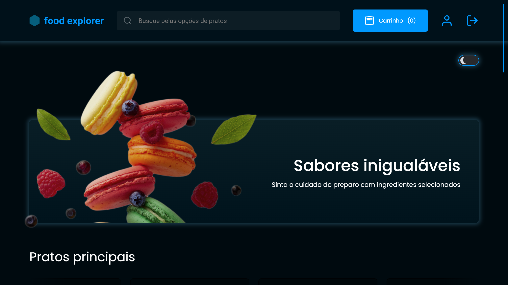
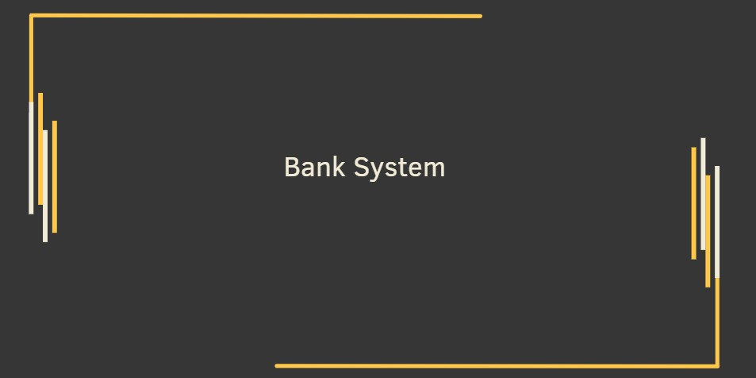
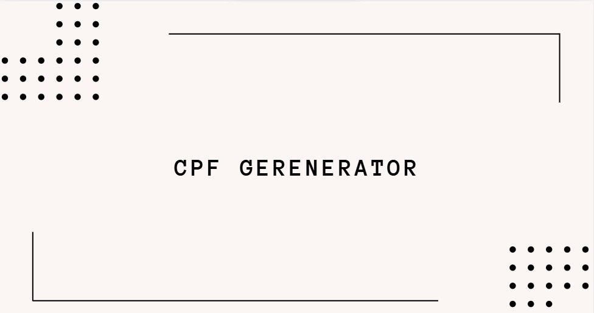
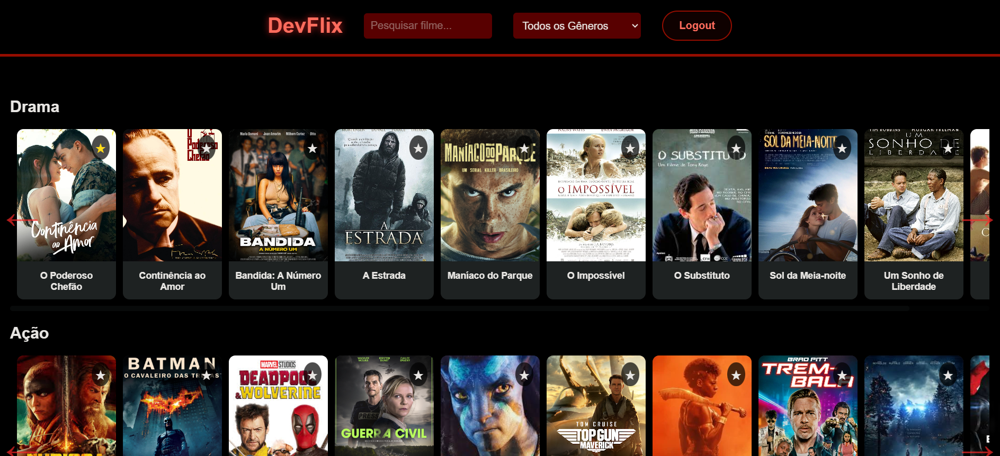
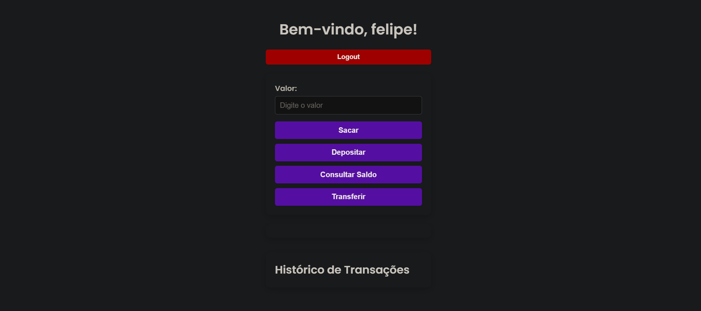
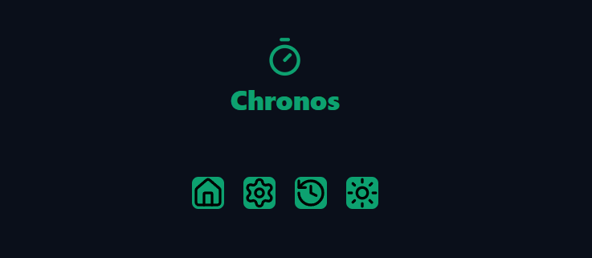

Olá! Sou Felipe Rodrigues Prado, um desenvolvedor apaixonado por tecnologia e inovação. Com 22 anos e residente de São Paulo, venho aprimorando minhas habilidades em desenvolvimento de software. No momento, estou cursando Análise e Desenvolvimento de Sistemas, focando principalmente em frontend, backend e análise de sistemas. Busco sempre aplicar meus conhecimentos em projetos reais e estou em busca de novas oportunidades para crescer ainda mais profissionalmente.
Felipe Rodrigues Prado
Sobre Mim
Habilidades Técnicas
HTML5
Domínio de HTML5 para construção de páginas semânticas, acessíveis e bem estruturadas.
CSS3
Proficiência em estilização de layouts modernos e responsivos, utilizando técnicas avançadas como Flexbox e Grid.
JavaScript
Experiência no desenvolvimento de aplicações dinâmicas e interativas, utilizando recursos avançados da linguagem.
React
Experiência com React para criação de interfaces dinâmicas e escaláveis, utilizando hooks, context API e Redux.
Java
Habilidade na construção de sistemas robustos, com foco em OOP (Programação Orientada a Objetos) e frameworks como Spring.
Python
Conhecimento em Python para automação de processos, análise de dados e desenvolvimento de aplicações web e scripts.
Node.js
Habilidade em construir servidores web e APIs RESTful utilizando Node.js e Express.js.
MongoDB
Experiência com bancos de dados NoSQL, utilizando MongoDB para modelagem de dados e implementação de queries eficientes.
Git
Experiência com controle de versão utilizando Git para gerenciamento de projetos e colaboração em equipe.
GitHub
Domínio do GitHub para hospedagem de repositórios, colaboração em projetos open source e gerenciamento de issues e pull requests.
Projetos
Food Explorer
O Food Explorer é uma aplicação web que permite aos usuários buscar, explorar e salvar receitas de diferentes tipos de alimentos. A ideia central é proporcionar uma experiência rica onde o usuário pode visualizar informações detalhadas sobre ingredientes, passos de preparação e categorização das receitas.

Visualizar Projeto
Rocket Notes
Rocketnotes é uma aplicação de notas criada para ajudar você a organizar suas ideias e informações de maneira eficiente. Com funcionalidades práticas como criação, pesquisa e exclusão de notas, a plataforma é ideal para simplificar seu dia a dia.
Task Manager
Um gerenciador de tarefas simples, desenvolvido em Python, que permite adicionar, desfazer e refazer tarefas, além de salvar automaticamente as informações em um arquivo JSON.

Bank System
Este projeto implementa um sistema bancário em Python, onde um usuário pode criar uma conta bancária, realizar depósitos, efetuar saques e consultar o saldo.

Visualizar Projeto
Cpf Generator
Este é um simples gerador de CPFs válidos implementado em Python. Ele utiliza cálculos baseados no algoritmo oficial para criar CPFs que passam na validação do dígito verificador.

Visualizar Projeto
DevFlix
DevFlix é uma plataforma de streaming de filmes desenvolvida como parte do meu portfólio. O projeto foi criado para demonstrar habilidades em desenvolvimento web, utilizando HTML, CSS e JavaScript. A aplicação simula uma experiência de streaming, com funcionalidades como login, registro, pesquisa de filmes, filtragem por gênero, e uma interface interativa para visualização de detalhes dos filmes.

Visualizar Projeto
Bank System 2.0
O Sistema Bancário Digital é uma aplicação web que simula operações bancárias básicas, como criação de contas, login, depósitos, saques, transferências e consulta de saldo. Desenvolvido com HTML, CSS e JavaScript, o projeto tem como objetivo demonstrar habilidades em desenvolvimento front-end, lógica de programação e manipulação de dados em tempo real.

Visualizar Projeto
Chronos Pomodoro
A Técnica Pomodoro é uma metodologia de produtividade criada por Francesco Cirillo, que consiste em dividir o trabalho em blocos de tempo (os famosos "Pomodoros") intercalados com pausas. O objetivo é manter o foco total por um período curto e garantir descansos para evitar o cansaço mental.

Visualizar Projeto
Formação
- Análise e Desenvolvimento de Sistemas – UniAmérica (2023 – 2025) - cursando
Cursos
- Explorer (Rocketseat)
- Java (Rocketseat)
- NLW Unite (Rocketseat)
- C sharp (Rocketseat)
- Basic FrontEnd (UniAmérica)
- Object-Oriented Developer (UniAmérica)
- Programing Basics (UniAmérica)
- FrontEnd Developer (UniAmérica)
- BackEnd Developer (UniAmérica)
- Full Stack Developer (UniAmérica)
- DevOps Strategist (UniAmérica)